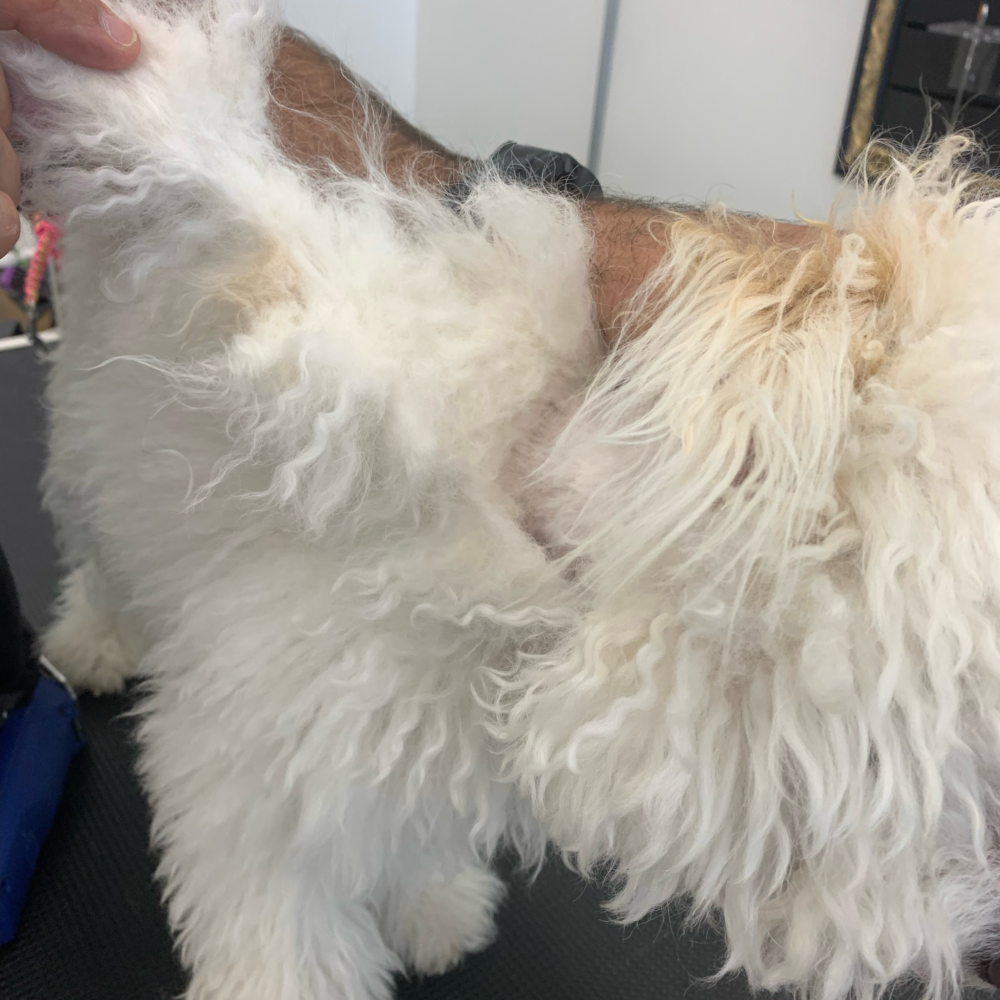
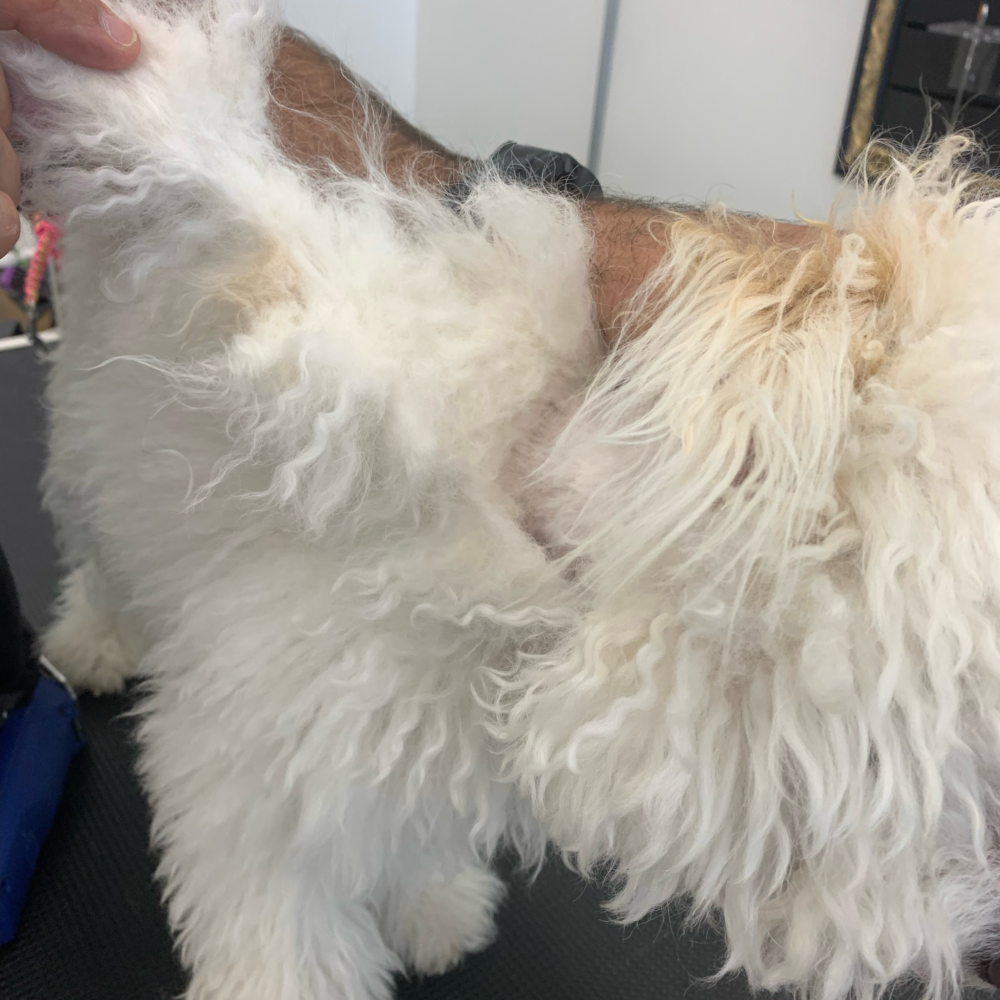
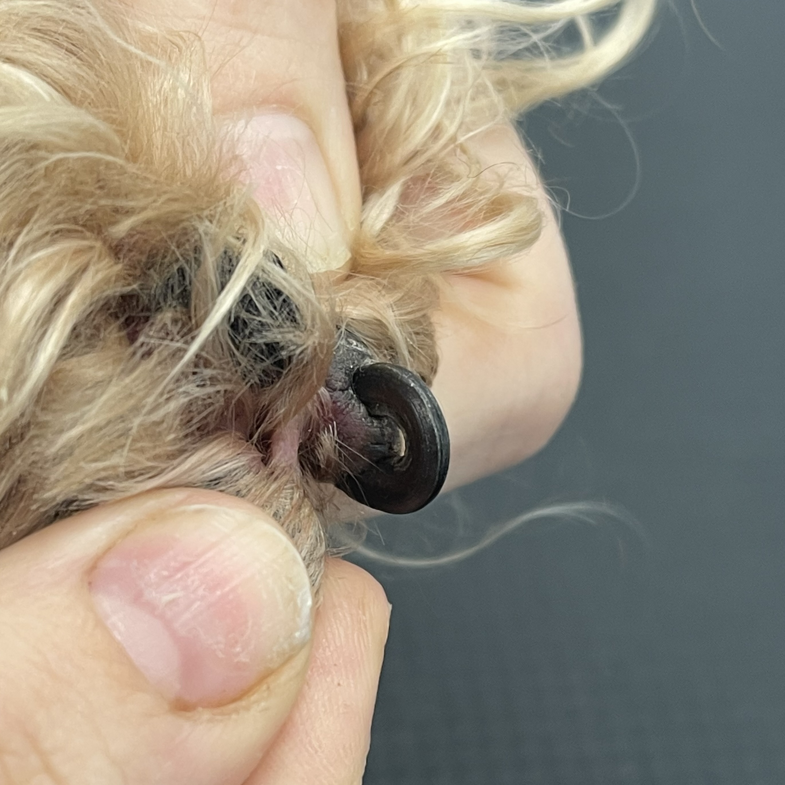
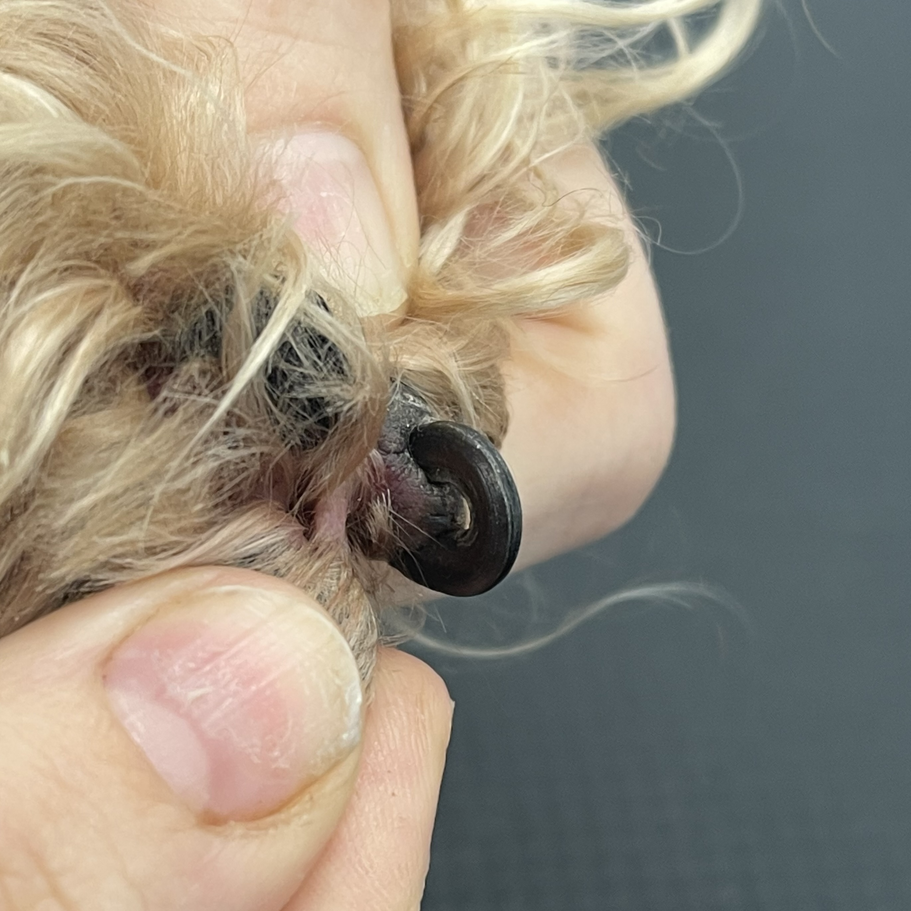

Grooming
Here on the On The Pup & Up, we offer a different type of service. One that considers your pet’s custom needs. Most other grooming services are timed crunch that will not consider if your pet is having trouble with their groom. Grooming service for a dog could be terrifying at times, we gently
 

Skin and Coat
Matting: Unkept and unbrushed hair can quickly turn into tangled hair which quickly turns into a mat. A mat is a clump of hair that gathers close to the skin. Matting makes it difficult for a pet’s skin to breath and can lead to nasty injuries and infections hiding beneath them. Mats are typically very painful for pets as it is constantly pulling on the skin with every movement. Mats CANNOT be brushed out and must be slowly and carefully shaved out by a professional.
 

Nails and Paws
Over grown/ split nails: If a pet’s nails are overgrown this can lead to bone deformity and early arthritis. It can also lead to injury as nails that are not cared for often enough may curl inward and start growing into the pad of the paw. Imagine walking with your toenail growing into your foot…OUCH! Split nails happen when there is a vitamin deficiency, a pet chews on it too often, or it was caught. Usually these heal on their own, but they can be extremely painful for the pet as the nerve ending is sometimes exposed. A vet may want to keep it wrapped and clean depending on the level of severity.